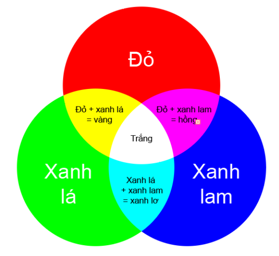

led_onboard — Onboard LED¶
Chức năng chính và chức năng của led_onboard
xController được tích hợp sẵn 2 đèn LED đa màu RGB trên board. Đèn LED RGB là đèn LED đặc biệt, có thể phát sáng với nhiều màu khác nhau (lên đến 16 triệu màu). Màu của đèn LED được tổng hợp từ 3 đèn màu đỏ (Red), xanh lục (Green), xanh lam (Blue) bên trong.
Các LED màu này có độ sáng từ 0 đến 255. Để thay đổi màu đèn LED RGB, chúng ta sẽ thay đổi độ sáng của 3 LED màu này.
{kind=link}
Function¶
- led_onboard.show(index, color)¶
Hiển thị đèn led trên mạch xController, với các tham số:
index :
0 : Cả hai LED
1 : LED bên trái
2 : LED bên phải.
color : Có thể sử dụng 2 hệ màu là RGB hoặc HEX.
RGB : (Red,Green,Blue) với phạm vi mỗi tham số là
0 ~ 255. Nếu bằng0tương ứng không có thành phần màu và nếu bằng255trương ứng thành phần màu cao nhất.HEX : hex_to_rgb(‘#0000ff’)
- led_onboard.show(0, (0, 0, 0))¶
Tắt LED
Sample Code¶
Bật tắt hai LED Onboard
while True:
led_onboard.show(0, hex_to_rgb('#0000ff'))
sleep(1)
led_onboard.show(0, (0, 0, 0))
sleep(1)